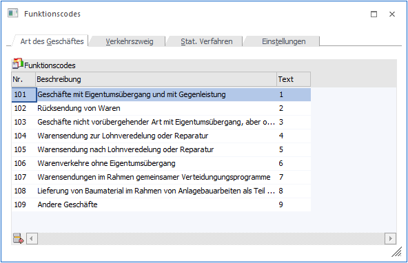
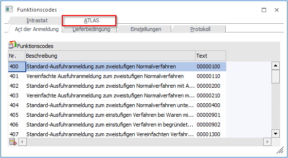
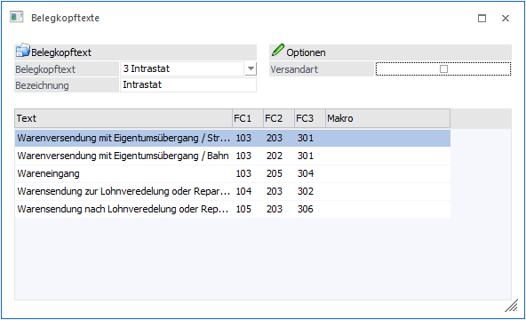
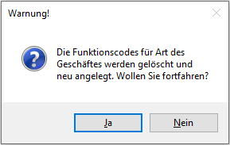
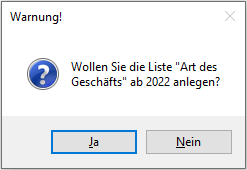
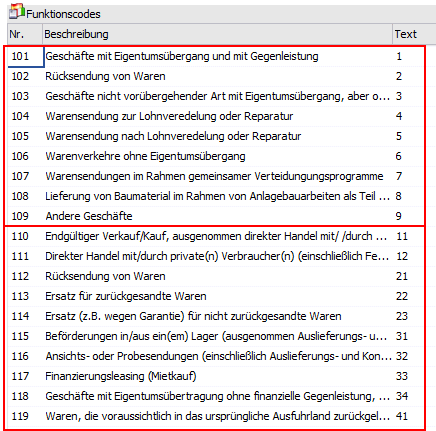

Um das Erhebungsverfahren zur Erstellung der Statistik des Warenverkehrs zwischen den Mitgliedsstaaten der EU (Intrastat) entsprechend auswerten bzw. ausgeben zu können, werden so genannte Funktionscodes benötigt. Diese Funktionscodes, sowie die für die Intrastat erforderlichen "Einstellungen" (z.B. Unternehmensdaten), können in dem Menüpunkt
1 WinLine FAKT
1 Stammdaten
1 Funktionscodes
festgelegt werden.
Achtung
Bei der ersten Anwahl des Programms werden die Funktionscodes automatisch in die Tabellen übernommen (dieses kann auch über Anwahl des Buttons "Funktionscodes neu anlegen" geschehen). Eine automatische Pflege findet von Seiten mesonic nicht statt.

Hinweis
Für Mandanten mit dem Landeskennzeichen "Deutschland" (und entsprechender Lizenz) können hier zusätzlich Einstellungen für die "ATLAS-Ausfuhr"-Schnittstelle getätigt werden.

Hinweis - ATLAS
Voraussetzungen dafür, dass beim Druck eines Kundenlieferscheins im "Ausgabeverzeichnis" eine entsprechende XML-Datei erzeugt wird, sind:
ü Mandant mit dem Landeskennzeichen "Deutschland"
ü Bestimmungsland im Beleg vorhanden und ungleich Deutschland
ü Artikel mit KN8-Nummer vorhanden
ü ATLAS-Stammdaten entsprechend gefüllt
ü vorhandene ATLAS-Lizenz
ü Kennzeichen "Atlas-Ausfuhr" in der Belegart aktiviert
Hinweis - Vorbelegung
Da im Normalfall meistens bei einzelnen Kunden und Lieferanten immer der gleiche Verkehrszweig, das gleiche Statistische Verfahren und die Art des Geschäftes zum Tragen kommt, können die "Standardkonstellationen" über den Menüpunkt Belegkopftexte (WinLine FAKT - Stammdaten - Belegstammdaten - Belegkopftexte) zusammengefasst werden. Die dort generierten Auswahlen können dann wiederum im Personenkonto zugeordnet werden.
Weicht eine Meldung vom Standard ab, können die Komponenten Stat. Verfahren, Art des Geschäftes und Verkehrszweig im Menüpunkt "Intrastat" (WinLine FAKT - Auswertungen - Intrastat) bearbeitet werden.
Beispiel - Vorbelegung
In der Tabelle der Belegkopftexte werden die Werte in einem österreichischen Mandanten für die jeweiligen Texte hinterlegt.

Ø Verkauf Straßentransport (Warenversendung mit Eigentumsübergang / Straße)
ü 101 - Endgültiger Verkauf/Kauf, ausgenommen direkter Handel mit/ /durch private(n) Verbraucher(n)
ü 203 - Straßenverkehr
ü 301 - Versendung
Ø Verkauf Eisenbahntransport (Warenversendung mit Eigentumsübergang / Bahn)
ü 101 - Endgültiger Verkauf/Kauf, ausgenommen direkter Handel mit/ /durch private(n) Verbraucher(n)
ü 202 - Eisenbahnverkehr
ü 301 - Versendung
Ø Rücksendung von Waren per Bahn
ü 103 - Rücksendung von Waren
ü 202 - Eisenbahnverkehr
ü 301 - Versendung => eine Eingangs-Meldung mit negativen Werten ist nicht zulässig. Daher muss eine Warenrücksendung als Versendung markiert werden!
Bekommt nun ein Kunde z.B. die Waren immer per Bahn, mit Eigentumsübergang und mit Gegenleistung geliefert, kann direkt im Kundenstamm (WinLine FAKT - Stammdaten -Konten - Personenkonten) der entsprechende Belegkopftext hinterlegt werden. Im Belegerfassen kann der Belegkopftext noch verändert werden.
Buttons
Ø Ok
Durch Anwahl des Buttons "Ok" bzw. der Taste F5 werden die durchgeführten Änderungen gespeichert.
Ø Ende
Durch Drücken des Buttons "Ende" bzw. der Taste ESC wird das Fenster geschlossen und alle nicht gespeicherten Eingaben verworfen.
Ø Funktionscode neu anlegen
Durch Anwahl dieses Buttons werden - nach Bestätigung der Sicherheitsabfrage mit "Ja" - alle Funktionscodes gelöscht, und jene mit Gültigkeit ab Meldejahr 2022 neu angelegt.

Wird die Meldung mit "Nein" bestätigt, erfolgt eine weitere Abfrage und es können die Funktionscodes mit Gültigkeit ab Meldejahr 2022 zusätzlich zu bestehenden Funktionscodes angelegt werden.


Hinweis
Um Intrastatmeldungen für Zeiträume vor dem Berichtsjahr 2022 auszugeben, müssen auch die entsprechenden Codes im Wirtschaftsjahr in dem die Auswertung gemacht wird, vorhanden sein. D.h. ein "Überschreiben" der bestehenden "einstelligen" Codes verhindert ggfs. damit, dass eine Intrastatmeldung korrekt ausgegeben werden kann.
Daraus ergibt sich: Werden für Wirtschaftsjahre vor 2022 einstellige Codes, und für Wirtschaftsjahre ab 2022 zweistellige Codes verwendet, so muss die Intrastat-Auswertung in jenem Jahr erfolgen, in dem die entsprechenden Codes angelegt sind.
Ø Ausgabe Bildschirm / Ausgabe Drucker (nur im Register "Atlas - Protokoll")
Je nach gewählten Button wird das Atlas-Protokoll am Bildschirm oder auf den Drucker ausgegeben.